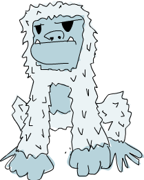

构造我们自己的 Types 和 Typeclasses
Table of Contents
1 构造我们自己的 Types 和 Typeclasses
1.1 Algebraic Data Types 入门
在前面的章节中，我们谈了一些 Haskell 内置的型别和Typeclass。而在本章中，我们将学习构造型别和 Typeclass 的方法。
我们已经见识过许多态别，如 Bool 、 Int 、 Char 、 Maybe 等等，不过在
Haskell 中该如何构造自己的型别呢？好问题，一种方法是使用 /data/关键字。首先我们来看看 Bool 在标准函式库中的定义：
data Bool = False | True
data 表示我们要定义一个新的型别。 = 的左端标明型别的名称即 Bool ， =
的右端就是/值构造子/ (Value Constructor)，它们明确了该型别可能的值。=|=读作
"或"，所以可以这样阅读该声明： Bool 型别的值可以是 True 或 False 。型别名和值构造子的首字母必大写。
相似，我们可以假想 Int 型别的声明：
data Int = -2147483648 | -2147483647 | ... | -1 | 0 | 1 | 2 | ... | 2147483647

头尾两个值构造子分别表示了 Int 型别的最小值和最大值，注意到真正的型别宣告不是长这个样子的，这样写只是为了便于理解。我们用省略号表示中间省略的一大段数字。
我们想想 Haskell 中图形的表示方法。表示圆可以用一个 Tuple，如
(43.1,55.0,10.4) ，前两项表示圆心的位置，末项表示半径。听着不错，不过三维矢量或其它什么东西也可能是这种形式！更好的方法就是自己构造一个表示图形的型别。假定图形可以是圆(Circle) 或长方形 (Rectangle)：
data Shape = Circle Float Float Float | Rectangle Float Float Float Float
这是啥，想想？ Circle 的值构造子有三个项，都是Float。可见我们在定义值构造子时，可以在后面跟几个型别表示它包含值的型别。在这里，前两项表示圆心的坐标，尾项表示半径。 Rectangle 的值构造子取四个 Float 项，前两项表示其左上角的坐标，后两项表示右下角的坐标。
谈到「项」 (field)，其实应为「参数」(parameters)。值构造子的本质是个函数，可以返回一个型别的值。我们看下这两个值构造子的型别声明：
ghci> :t Circle Circle :: Float -> Float -> Float -> Shape ghci> :t Rectangle Rectangle :: Float -> Float -> Float -> Float -> Shape
Cool，这么说值构造子就跟普通函数并无二致啰，谁想得到？我们写个函数计算图形面积：
surface :: Shape -> Float surface (Circle _ _ r) = pi * r ^ 2 surface (Rectangle x1 y1 x2 y2) = (abs $ x2 - x1) * (abs $ y2 - y1)
值得一提的是，它的型别声明表示了该函数取一个 Shape 值并返回一个 Float 值。写 Circle -> Float 是不可以的，因为 Circle 并非型别，真正的型别应该是
Shape 。这与不能写 True->False 的道理是一样的。再就是，我们使用的模式匹配针对的都是值构造子。之前我们匹配过 [] 、 False 或 5 ，它们都是不包含参数的值构造子。
我们只关心圆的半径，因此不需理会表示坐标的前两项：
ghci> surface $ Circle 10 20 10 314.15927 ghci> surface $ Rectangle 0 0 100 100 10000.0
Yay，it works！不过我们若尝试输出 Circle 10 20 到控制台，就会得到一个错误。这是因为 Haskell还不知道该型别的字符串表示方法。想想，当我们往控制台输出值的时候，Haskell会先调用 show 函数得到这个值的字符串表示才会输出。因此要让我们的 Shape 型别成为 Show 型别类的成员。可以这样修改：
data Shape = Circle Float Float Float | Rectangle Float Float Float Float deriving (Show)
先不去深究 /deriving/（派生），可以先这样理解：若在 data 声明的后面加上
deriving (Show) ，那 Haskell 就会自动将该型别至于 Show 型别类之中。好了，由于值构造子是个函数，因此我们可以拿它交给 map ，拿它不全调用，以及普通函数能做的一切。
ghci> Circle 10 20 5 Circle 10.0 20.0 5.0 ghci> Rectangle 50 230 60 90 Rectangle 50.0 230.0 60.0 90.0
我们若要取一组不同半径的同心圆，可以这样：
ghci> map (Circle 10 20) [4,5,6,6] [Circle 10.0 20.0 4.0,Circle 10.0 20.0 5.0,Circle 10.0 20.0 6.0,Circle 10.0 20.0 6.0]
我们的型别还可以更好。增加加一个表示二维空间中点的型别，可以让我们的 Shape
更加容易理解：
data Point = Point Float Float deriving (Show) data Shape = Circle Point Float | Rectangle Point Point deriving (Show)
注意下 Point 的定义，它的型别与值构造子用了相同的名字。没啥特殊含义，实际上，在一个型别含有唯一值构造子时这种重名是很常见的。好的，如今我们的 Circle 含有两个项，一个是 Point 型别，一个是 Float 型别，好作区分。 Rectangle 也是同样，我们得修改 surface 函数以适应型别定义的变动。
surface :: Shape -> Float surface (Circle _ r) = pi * r ^ 2 surface (Rectangle (Point x1 y1) (Point x2 y2)) = (abs $ x2 - x1) * (abs $ y2 - y1)
唯一需要修改的地方就是模式。在 Circle 的模式中，我们无视了整个 Point 。而在 Rectangle 的模式中，我们用了一个嵌套的模式来取得 Point 中的项。若出于某原因而需要整个 Point ，那么直接匹配就是了。
ghci> surface (Rectangle (Point 0 0) (Point 100 100)) 10000.0 ghci> surface (Circle (Point 0 0) 24) 1809.5574
表示移动一个图形的函数该怎么写？它应当取一个 Shape 和表示位移的两个数，返回一个位于新位置的图形。
nudge :: Shape -> Float -> Float -> Shape nudge (Circle (Point x y) r) a b = Circle (Point (x+a) (y+b)) r nudge (Rectangle (Point x1 y1) (Point x2 y2)) a b = Rectangle (Point (x1+a) (y1+b)) (Point (x2+a) (y2+b))
简洁明了。我们再给这一 Shape 的点加上位移的量。
ghci> nudge (Circle (Point 34 34) 10) 5 10 Circle (Point 39.0 44.0) 10.0
如果不想直接处理 Point ，我们可以搞个辅助函数 (auxilliary function)，初始从原点创建图形，再移动它们。
baseCircle :: Float -> Shape baseCircle r = Circle (Point 0 0) r baseRect :: Float -> Float -> Shape baseRect width height = Rectangle (Point 0 0) (Point width height)
ghci> nudge (baseRect 40 100) 60 23 Rectangle (Point 60.0 23.0) (Point 100.0 123.0)
毫无疑问，你可以把你的数据型别导出到模块中。只要把你的型别与要导出的函数写到一起就是了。再在后面跟个括号，列出要导出的值构造子，用逗号隔开。如要导出所有的值构造子，那就写个..。
若要将这里定义的所有函数和型别都导出到一个模块中，可以这样：
module Shapes ( Point(..) , Shape(..) , surface , nudge , baseCircle , baseRect ) where
一个 Shape (..)，我们就导出了 Shape 的所有值构造子。这一来无论谁导入我们的模块，都可以用 Rectangle 和 Circle 值构造子来构造 Shape 了。这与写
Shape(Rectangle,Circle) 等价。
我们可以选择不导出任何 Shape 的值构造子，这一来使用我们模块的人就只能用辅助函数 baseCircle 和 baseRect 来得到 Shape 了。 Data.Map 就是这一套，没有=Map.Map [(1,2),(3,4)]= ，因为它没有导出任何一个值构造子。但你可以用，像
Map.fromList 这样的辅助函数得到 map 。应该记住，值构造子只是函数而已，如果不导出它们，就拒绝了使用我们模块的人调用它们。但可以使用其他返回该型别的函数，来取得这一型别的值。
不导出数据型别的值构造子隐藏了他们的内部实现，令型别的抽象度更高。同时，我们模块的用户也就无法使用该值构造子进行模式匹配了。
1.2 Record Syntax
OK，我们需要一个数据型别来描述一个人，得包含他的姓、名、年龄、身高、电话号码以及最爱的冰淇淋。我不知你的想法，不过我觉得要了解一个人，这些数据就够了。就这样，实现出来！
data Person = Person String String Int Float String String deriving (Show)
O~Kay，第一项是名，第二项是姓，第三项是年龄，等等。我们造一个人：
ghci> let guy = Person "Buddy" "Finklestein" 43 184.2 "526-2928" "Chocolate" ghci> guy Person "Buddy" "Finklestein" 43 184.2 "526-2928" "Chocolate"
貌似很酷，就是难读了点儿。弄个函数得人的某项数据又该如何？如姓的函数，名的函数，等等。好吧，我们只能这样：
firstName :: Person -> String firstName (Person firstname _ _ _ _ _) = firstname lastName :: Person -> String lastName (Person _ lastname _ _ _ _) = lastname age :: Person -> Int age (Person _ _ age _ _ _) = age height :: Person -> Float height (Person _ _ _ height _ _) = height phoneNumber :: Person -> String phoneNumber (Person _ _ _ _ number _) = number flavor :: Person -> String flavor (Person _ _ _ _ _ flavor) = flavor
唔，我可不愿写这样的代码！虽然 it works，但也太无聊了哇。
ghci> let guy = Person "Buddy" "Finklestein" 43 184.2 "526-2928" "Chocolate" ghci> firstName guy "Buddy" ghci> height guy 184.2 ghci> flavor guy "Chocolate"
你可能会说，一定有更好的方法！呃，抱歉，没有。
开个玩笑，其实有的，哈哈哈～Haskell的发明者都是天才，早就料到了此类情形。他们引入了一个特殊的型别，也就是刚才提到的更好的方法– /Record Syntax/。
data Person = Person { firstName :: String , lastName :: String , age :: Int , height :: Float , phoneNumber :: String , flavor :: String } deriving (Show)
与原先让那些项一个挨一个的空格隔开不同，这里用了花括号 {} 。先写出项的名字，如 firstName ，后跟两个冒号(也叫 Paamayim Nekudotayim，哈哈(译者不知道什么意思囧))，标明其型别，返回的数据型别仍与以前相同。这样的好处就是，可以用函数从中直接按项取值。通过Record Syntax，Haskell 就自动生成了这些函数：
firstName , lastName , age , height , phoneNumber 和 flavor 。
ghci> :t flavor flavor :: Person -> String ghci> :t firstName firstName :: Person -> String
还有个好处，就是若派生 (deriving) 到 Show 型别类，它的显示是不同的。假如我们有个型别表示一辆车，要包含生产商、型号以及出场年份：
data Car = Car String String Int deriving (Show)
ghci> Car "Ford" "Mustang" 1967 Car "Ford" "Mustang" 1967
若用 Record Syntax，就可以得到像这样的新车：
data Car = Car {company :: String, model :: String, year :: Int} deriving (Show)
ghci> Car {company="Ford", model="Mustang", year=1967} Car {company = "Ford", model = "Mustang", year = 1967}
这一来在造车时我们就不必关心各项的顺序了。
表示三维矢量之类简单数据， Vector = Vector Int Int Int 就足够明白了。但一个值构造子中若含有很多个项且不易区分，如一个人或者一辆车啥的，就应该使用Record
Syntax。
1.3 Type parameters
值构造子可以取几个参数产生一个新值，如 Car 的构造子是取三个参数返回一个
Car 。与之相似，型别构造子可以取型别作参数，产生新的型别。这咋一听貌似有点深奥，不过实际上并不复杂。如果你对C++的模板有了解，就会看到很多相似的地方。我们看一个熟悉的型别，好对型别参数有个大致印象：
data Maybe a = Nothing | Just a

这里的a就是个型别参数。也正因为有了它， Maybe 就成为了一个型别构造子。在它的值不是 Nothing 时，它的型别构造子可以搞出 Maybe Int ， Maybe String
等等诸多态别。但只一个 Maybe 是不行的，因为它不是型别，而是型别构造子。要成为真正的型别，必须得把它需要的型别参数全部填满。
所以，如果拿 Char 作参数交给 Maybe ，就可以得到一个 Maybe Char 的型别。如，=Just 'a'= 的型别就是 Maybe Char 。
你可能并未察觉，在遇见 Maybe 之前我们早就接触到型别参数了。它便是 List型别。这里面有点语法糖，List型别实际上就是取一个参数来生成一个特定型别，这型别可以是 [Int] ， [Char] 也可以是 [String] ，但不会跟在 [] 的后面。
把玩一下 =Maybe=！
ghci> Just "Haha" Just "Haha" ghci> Just 84 Just 84 ghci> :t Just "Haha" Just "Haha" :: Maybe [Char] ghci> :t Just 84 Just 84 :: (Num t) => Maybe t ghci> :t Nothing Nothing :: Maybe a ghci> Just 10 :: Maybe Double Just 10.0
型别参数很实用。有了它，我们就可以按照我们的需要构造出不同的型别。若执行 :t
Just "Haha" ，型别推导引擎就会认出它是个 Maybe [Char] ，由于 Just a 里的
a 是个字符串，那么 Maybe a 里的 a 一定也是个字符串。

注意下， Nothing 的型别为 Maybe a 。它是多态的，若有函数取 Maybe Int 型别的参数，就一概可以传给它一个 Nothing ，因为 Nothing 中不包含任何值。
Maybe a 型别可以有 Maybe Int 的行为，正如 5 可以是 Int 也可以是
Double 。与之相似，空 List 的型别是 [a] ，可以与一切List 打交道。因此，我们可以 [1,2,3]++[] ，也可以 ["ha","ha,","ha"]++[] 。
型别参数有很多好处，但前提是用对了地方才行。一般都是不关心型别里面的内容，如
Maybe a 。一个型别的行为若有点像是容器，那么使用型别参数会是个不错的选择。我们完全可以把我们的 Car 型别从
data Car = Car { company :: String , model :: String , year :: Int } deriving (Show)
改成：
data Car a b c = Car { company :: a , model :: b , year :: c } deriving (Show)
但是，这样我们又得到了什么好处？回答很可能是，一无所得。因为我们只定义了处理
Car String String Int 型别的函数，像以前，我们还可以弄个简单函数来描述车的属性。
tellCar :: Car -> String tellCar (Car {company = c, model = m, year = y}) = "This " ++ c ++ " " ++ m ++ " was made in " ++ show y
ghci> let stang = Car {company="Ford", model="Mustang", year=1967} ghci> tellCar stang "This Ford Mustang was made in 1967"
可爱的小函数！它的型别声明得很漂亮，而且工作良好。好，如果改成 Car a b c 又会怎样？
tellCar :: (Show a) => Car String String a -> String tellCar (Car {company = c, model = m, year = y}) = "This " ++ c ++ " " ++ m ++ " was made in " ++ show y
我们只能强制性地给这个函数安一个 (Show a) \=> Car String String a 的型别约束。看得出来，这要繁复得多。而唯一的好处貌似就是，我们可以使用=Show= 型别类的
instance 来作 a 的型别。
ghci> tellCar (Car "Ford" "Mustang" 1967) "This Ford Mustang was made in 1967" ghci> tellCar (Car "Ford" "Mustang" "nineteen sixty seven") "This Ford Mustang was made in \"nineteen sixty seven\"" ghci> :t Car "Ford" "Mustang" 1967 Car "Ford" "Mustang" 1967 :: (Num t) => Car [Char] [Char] t ghci> :t Car "Ford" "Mustang" "nineteen sixty seven" Car "Ford" "Mustang" "nineteen sixty seven" :: Car [Char] [Char] [Char]
其实在现实生活中，使用 Car String String Int 在大多数情况下已经满够了。所以给 Car 型别加型别参数貌似并没有什么必要。通常我们都是都是在一个型别中包含的型别并不影响它的行为时才引入型别参数。一组什么东西组成的List 就是一个List，它不关心里面东西的型别是啥，然而总是工作良好。若取一组数字的和，我们可以在后面的函数体中明确是一组数字的List。Maybe与之相似，它表示可以有什么东西可以没有，而不必关心这东西是啥。
我们之前还遇见过一个型别参数的应用，就是 Data.Map 中的 Map k v 。 k 表示 Map 中键的型别， v 表示值的型别。这是个好例子，Map中型别参数的使用允许我们能够用一个型别索引另一个型别，只要键的型别在 Ord 型别类就行。如果叫我们自己定义一个 Map 型别，可以在 data 声明中加上一个型别类的约束。
data (Ord k) => Map k v = ...
然而 Haskell 中有一个严格的约定，那就是永远不要在 data 声明中添加型别约束。为啥？嗯，因为这样没好处，反而得写更多不必要的型别约束。 Map k v 要是有
Ord k 的约束，那就相当于假定每个 Map 的相关函数都认为 k 是可排序的。若不给数据型别加约束，我们就不必给那些不关心键是否可排序的函数另加约束了。这类函数的一个例子就是 toList ，它只是把一个 Map 转换为关联 List 罢了，型别声明为
toList :: Map k v -> [(k, v)] 。要是加上型别约束，就只能是 toList :: (Ord
k) = >Map k a -> [(k,v)] ，明显没必要嘛。
所以说，永远不要在 data 声明中加型别约束 —即便看起来没问题。免得在函数声明中写出过多无谓的型别约束。
我们实现个表示三维矢量的型别，再给它加几个处理函数。我么那就给它个型别参数，虽然大多数情况都是数值型，不过这一来它就支持了多种数值型别。
data Vector a = Vector a a a deriving (Show) vplus :: (Num t) => Vector t -> Vector t -> Vector t (Vector i j k) `vplus` (Vector l m n) = Vector (i+l) (j+m) (k+n) vectMult :: (Num t) => Vector t -> t -> Vector t (Vector i j k) `vectMult` m = Vector (i*m) (j*m) (k*m) scalarMult :: (Num t) => Vector t -> Vector t -> t (Vector i j k) `scalarMult` (Vector l m n) = i*l + j*m + k*n
vplus 用来相加两个矢量，即将其所有对应的项相加。 scalarMult 用来求两个矢量的标量积， vectMult 求一个矢量和一个标量的积。这些函数可以处理 Vector
Int ， Vector Integer ， Vector Float 等等型别，只要 Vector a 里的这个
a 在 Num 型别类中就行。同样，如果你看下这些函数的型别声明就会发现，它们只能处理相同型别的矢量，其中包含的数字型别必须与另一个矢量一致。注意，我们并没有在=data= 声明中添加 Num 的类约束。反正无论怎么着都是给函数加约束。
再度重申，型别构造子和值构造子的区分是相当重要的。在声明数据型别时，等号=左端的那个是型别构造子，右端的(中间可能有|分隔)都是值构造子。拿 Vector t t t ->
Vector t t t -> t 作函数的型别就会产生一个错误，因为在型别声明中只能写型别，而 =Vector=的型别构造子只有个参数，它的值构造子才是有三个。我们就慢慢耍：
ghci> Vector 3 5 8 `vplus` Vector 9 2 8 Vector 12 7 16 ghci> Vector 3 5 8 `vplus` Vector 9 2 8 `vplus` Vector 0 2 3 Vector 12 9 19 ghci> Vector 3 9 7 `vectMult` 10 Vector 30 90 70 ghci> Vector 4 9 5 `scalarMult` Vector 9.0 2.0 4.0 74.0 ghci> Vector 2 9 3 `vectMult` (Vector 4 9 5 `scalarMult` Vector 9 2 4) Vector 148 666 222
1.4 Derived instances

在 [types-and-type-classes.html#Typeclasses入门 Typeclass 101]那一节里面，我们了解了 Typeclass的基础内容。里面提到，型别类就是定义了某些行为的接口。例如，
Int 型别是=Eq= 型别类的一个 instance，=Eq= 类就定义了判定相等性的行为。Int值可以判断相等性，所以 Int 就是 Eq 型别类的成员。它的真正威力体现在作为 Eq
接口的函数中，即 == 和=/==。只要一个型别是 Eq 型别类的成员，我们就可以使用 == 函数来处理这一型别。这便是为何 4==4 和 ~"foo"/="bar"~ 这样的表达式都需要作型别检查。
我们也曾提到，人们很容易把型别类与 Java，Python，C++等语言的类混淆。很多人对此都倍感不解，在原先那些语言中，类就像是蓝图，我们可以根据它来创造对象、保存状态并执行操作。而型别类更像是接口，我们不是靠它构造数据，而是给既有的数据型别描述行为。什么东西若可以判定相等性，我们就可以让它成为=Eq= 型别类的 instance。什么东西若可以比较大小，那就可以让它成为 =Ord=型别类的 instance。
在下一节，我们将看一下如何手工实现型别类中定义函数来构造instance。现在呢，我们先了解下 Haskell 是如何自动生成这几个型别类的instance， Eq , Ord ,
Enum , Bounded , Show , Read 。只要我们在构造型别时在后面加个
deriving (派生)关键字，Haskell就可以自动地给我们的型别加上这些行为。
看这个数据型别：
data Person = Person { firstName :: String , lastName :: String , age :: Int }
这描述了一个人。我们先假定世界上没有重名重姓又同龄的人存在，好，假如有两个
record，有没有可能是描述同一个人呢？当然可能，我么可以判定姓名年龄的相等性，来判断它俩是否相等。这一来，让这个型别成为 Eq 的成员就很靠谱了。直接 derive
这个 instance：
data Person = Person { firstName :: String , lastName :: String , age :: Int } deriving (Eq)
在一个型别 derive 为 Eq 的 instance 后，就可以直接使用 == 或 /= 来判断它们的相等性了。Haskell会先看下这两个值的值构造子是否一致(这里只是单值构造子)，再用 == 来检查其中的所有数据(必须都是 Eq 的成员)是否一致。在这里只有
String 和 Int，所以是没有问题的。测试下我们的 Eqinstance：
ghci> let mikeD = Person {firstName = "Michael", lastName = "Diamond", age = 43} ghci> let adRock = Person {firstName = "Adam", lastName = "Horovitz", age = 41} ghci> let mca = Person {firstName = "Adam", lastName = "Yauch", age = 44} ghci> mca == adRock False ghci> mikeD == adRock False ghci> mikeD == mikeD True ghci> mikeD == Person {firstName = "Michael", lastName = "Diamond", age = 43} True
自然， Person 如今已经成为了 Eq 的成员，我们就可以将其应用于所有在型别声明中用到 Eq 类约束的函数了，如 elem 。
ghci> let beastieBoys = [mca, adRock, mikeD] ghci> mikeD `elem` beastieBoys True
Show 和 Read 型别类处理可与字符串相互转换的东西。同 Eq 相似，如果一个型别的构造子含有参数，那所有参数的型别必须都得属于 Show 或 Read 才能让该型别成为其 instance。就让我们的 Person 也成为 Read 和 Show 的一员吧。
data Person = Person { firstName :: String , lastName :: String , age :: Int } deriving (Eq, Show, Read)
然后就可以输出一个 Person 到控制台了。
ghci> let mikeD = Person {firstName = "Michael", lastName = "Diamond", age = 43} ghci> mikeD Person {firstName = "Michael", lastName = "Diamond", age = 43} ghci> "mikeD is: " ++ show mikeD "mikeD is: Person {firstName = \"Michael\", lastName = \"Diamond\", age = 43}"
如果我们还没让 Person 型别作为 Show 的成员就尝试输出它，Haskell就会向我们抱怨，说它不知道该怎么把它表示成一个字符串。不过现在既然已经derive 成为了
Show 的一个 instance，它就知道了。
Read 几乎就是与 Show 相对的型别类， show 是将一个值转换成字符串，而
read 则是将一个字符串转成某型别的值。还记得，使用 read 函数时我们必须得用型别注释注明想要的型别，否则 Haskell就不会知道如何转换。
ghci> read "Person {firstName =\"Michael\", lastName =\"Diamond\", age = 43}" :: Person Person {firstName = "Michael", lastName = "Diamond", age = 43}
如果我们 read 的结果会在后面用到参与计算，Haskell 就可以推导出是一个Person
的行为，不加注释也是可以的。
ghci> read "Person {firstName =\"Michael\", lastName =\"Diamond\", age = 43}" == mikeD True
也可以 read 带参数的型别，但必须填满所有的参数。因此 read "Just 't'" ::
Maybe a 是不可以的， read "Just 't'" :: Maybe Char 才对。
很容易想象 Ord 型别类 derive instance的行为。首先，判断两个值构造子是否一致，如果是，再判断它们的参数，前提是它们的参数都得是 Ord 的 instance。 Bool
型别可以有两种值， False 和 True 。为了了解在比较中进程的行为，我们可以这样想象：
data Bool = False | True deriving (Ord)
由于值构造子 False 安排在 True 的前面，我们可以认为 True 比 False 大。
ghci> True `compare` False GT ghci> True > False True ghci> True < False False
在 Maybe a 数据型别中，值构造子 Nothing 在 Just 值构造子前面，所以一个
Nothing 总要比 Just something 的值小。即便这个 something 是
-100000000 也是如此。
ghci> Nothing < Just 100 True ghci> Nothing > Just (-49999) False ghci> Just 3 `compare` Just 2 GT ghci> Just 100 > Just 50 True
不过类似 Just (*3) > Just (*2) 之类的代码是不可以的。因为 (*3) 和 (*2)
都是函数，而函数不是 Ord 类的成员。
作枚举，使用数字型别就能轻易做到。不过使用 Enum 和 Bounded 型别类会更好，看下这个型别：
data Day = Monday | Tuesday | Wednesday | Thursday | Friday | Saturday | Sunday
所有的值构造子都是 nullary 的(也就是没有参数)，每个东西都有前置子和后继子，我们可以让它成为 Enum 型别类的成员。同样，每个东西都有可能的最小值和最大值，我们也可以让它成为 Bounded 型别类的成员。在这里，我们就同时将它搞成其它可
derive型别类的instance。再看看我们能拿它做啥：
data Day = Monday | Tuesday | Wednesday | Thursday | Friday | Saturday | Sunday deriving (Eq, Ord, Show, Read, Bounded, Enum)
由于它是 Show 和 Read 型别类的成员，我们可以将这个型别的值与字符串相互转换。
ghci> Wednesday Wednesday ghci> show Wednesday "Wednesday" ghci> read "Saturday" :: Day Saturday
由于它是 Eq 与 Ord 的成员，因此我们可以拿 Day 作比较。
ghci> Saturday == Sunday False ghci> Saturday == Saturday True ghci> Saturday > Friday True ghci> Monday `compare` Wednesday LT
它也是 Bounded 的成员，因此有最早和最晚的一天。
ghci> minBound :: Day Monday ghci> maxBound :: Day Sunday
它也是 Enum 的 instance，可以得到前一天和后一天，并且可以对此使用 List
的区间。
ghci> succ Monday Tuesday ghci> pred Saturday Friday ghci> [Thursday .. Sunday] [Thursday,Friday,Saturday,Sunday] ghci> [minBound .. maxBound] :: [Day] [Monday,Tuesday,Wednesday,Thursday,Friday,Saturday,Sunday]
那是相当的棒。
1.5 Type synonyms
在前面我们提到在写型别名的时候， [Char] 和 String 等价，可以互换。这就是由型别别名实现的。型别别名实际上什么也没做，只是给型别提供了不同的名字，让我们的代码更容易理解。这就是 [Char] 的别名 String 的由来。
type String = [Char]
我们已经介绍过了 type 关键字，这个关键字有一定误导性，它并不是用来创造新类（这是 data 关键字做的事情），而是给一个既有型别提供一个别名。
如果我们随便搞个函数 toUpperString 或其他什么名字，将一个字符串变成大写，可以用这样的型别声明 toUpperString :: [Char] -> [Char] ， 也可以这样
toUpperString :: String -> String ，二者在本质上是完全相同的。后者要更易读些。
在前面 Data.Map 那部分，我们用了一个关联 List 来表示 phoneBook ，之后才改成的 Map。我们已经发现了，一个关联 List就是一组键值对组成的 List。再看下我们 phoneBook 的样子：
phoneBook :: [(String,String)] phoneBook = [("betty","555-2938") ,("bonnie","452-2928") ,("patsy","493-2928") ,("lucille","205-2928") ,("wendy","939-8282") ,("penny","853-2492") ]
可以看出， phoneBook 的型别就是 [(String,String)] ，这表示一个关联List 仅是 String 到 String的映射关系。我们就弄个型别别名，好让它型别声明中能够表达更多信息。
type PhoneBook = [(String,String)]
现在我们 phoneBook 的型别声明就可以是 phoneBook :: PhoneBook 了。再给字符串加上别名：
type PhoneNumber = String type Name = String type PhoneBook = [(Name,PhoneNumber)]
Haskell 进程员给 String加别名是为了让函数中字符串的表达方式及用途更加明确。
好的，我们实现了一个函数，它可以取一名字和号码检查它是否存在于电话本。现在可以给它加一个相当好看明了的型别声明：
inPhoneBook :: Name -> PhoneNumber -> PhoneBook -> Bool inPhoneBook name pnumber pbook = (name,pnumber) `elem` pbook

如果不用型别别名，我们函数的型别声明就只能是 String -> String -> [(String
,String)] -> Bool 了。在这里使用型别别名是为了让型别声明更加易读，但你也不必拘泥于它。引入型别别名的动机既非单纯表示我们函数中的既有型别，也不是为了替换掉那些重复率高的长名字体别(如 [(String,String)] )，而是为了让型别对事物的描述更加明确。
型别别名也是可以有参数的，如果你想搞个型别来表示关联List，但依然要它保持通用，好让它可以使用任意型别作 key 和 value ，我们可以这样：
type AssocList k v = [(k,v)]
好的，现在一个从关联 List 中按键索值的函数型别可以定义为 (Eq k) = > k ->
AssocList k v -> Maybe v. AssocList i =。 AssocList =是个取两个型别做参数生成一个具体型别的型别构造子，如 = Assoc Int String=等等。
*Fronzie 说*：Hey！当我提到具体型别，那我就是说它是完全调用的，就像 ``Map Int String``。要不就是多态函数中的 ``[a]`` 或 ``(Ord a) => Maybe a`` 之类。有时我和 孩子们会说 "Maybe 型别"，但我们的意思并不是按字面来，傻瓜都知道 ``Maybe`` 是型 别构造子嘛。只要用一个明确的型别调用 ``Maybe``，如 ``Maybe String`` 可得一个具 体型别。你知道，只有具体型别才可以保存值。
我们可以用不全调用来得到新的函数，同样也可以使用不全调用得到新的型别构造子。同函数一样，用不全的型别参数调用型别构造子就可以得到一个不全调用的型别构造子，如果我们要一个表示从整数到某东西间映射关系的型别，我们可以这样：
type IntMap v = Map Int v
也可以这样：
type IntMap = Map Int
无论怎样， IntMap 的型别构造子都是取一个参数，而它就是这整数指向的型别。
Oh yeah，如果要你去实现它，很可能会用个 qualified import 来导入 Data.Map
。这时，型别构造子前面必须得加上模块名。所以应该写个 type IntMap = Map.Map
Int
你得保证真正弄明白了型别构造子和值构造子的区别。我们有了个叫 IntMap 或者
AssocList 的别名并不意味着我们可以执行类似 AssocList [(1,2),(4,5),(7,9)]
的代码，而是可以用不同的名字来表示原先的List，就像 [(1,2),(4,5),(7,9)] ::
AssocList Int Int 让它里面的型别都是Int。而像处理普通的 Tuple 构成的那种
List处理它也是可以的。型别别名(型别依然不变)，只可以在 Haskell的型别部分中使用，像定义新型别或型别声明或型别注释中跟在::后面的部分。
另一个很酷的二参型别就是 Either a b 了，它大约是这样定义的：
data Either a b = Left a | Right b deriving (Eq, Ord, Read, Show)
它有两个值构造子。如果用了 Left ，那它内容的型别就是 a ；用了 Right ，那它内容的型别就是 b 。我们可以用它来将可能是两种型别的值封装起来，从里面取值时就同时提供 Left 和 Right 的模式匹配。
ghci> Right 20 Right 20 ghci> Left "w00t" Left "w00t" ghci> :t Right 'a' Right 'a' :: Either a Char ghci> :t Left True Left True :: Either Bool b
到现在为止， Maybe 是最常见的表示可能失败的计算的型别了。但有时 Maybe 也并不是十分的好用，因为 Nothing 中包含的信息还是太少。要是我们不关心函数失败的原因，它还是不错的。就像 Data.Map 的 lookup 只有在搜索的项不在 Map时才会失败，对此我们一清二楚。但我们若想知道函数失败的原因，那还得使用 Either a
b ，用 a 来表示可能的错误的型别，用 b 来表示一个成功运算的型别。从现在开始，错误一律用 Left 值构造子，而结果一律用 Right 。
一个例子：有个学校提供了不少壁橱，好给学生们地方放他们的 Gun'N'Rose海报。每个壁橱都有个密码，哪个学生想用个壁橱，就告诉管理员壁橱的号码，管理员就会告诉他壁橱的密码。但如果这个壁橱已经让别人用了，管理员就不能告诉他密码了，得换一个壁橱。我们就用 Data.Map 的一个 Map来表示这些壁橱，把一个号码映射到一个表示壁橱占用情况及密码的 Tuple 里。
import qualified Data.Map as Map data LockerState = Taken | Free deriving (Show, Eq) type Code = String type LockerMap = Map.Map Int (LockerState, Code)
很简单，我们引入了一个新的型别来表示壁橱的占用情况。并为壁橱密码及按号码找壁橱的Map 分别设置了一个别名。好，现在我们实现这个按号码找壁橱的函数，就用
Either String Code 型别表示我们的结果，因为 lookup 可能会以两种原因失败。橱子已经让别人用了或者压根就没有这个橱子。如果 lookup 失败，就用字符串表明失败的原因。
lockerLookup :: Int -> LockerMap -> Either String Code lockerLookup lockerNumber map = case Map.lookup lockerNumber map of Nothing -> Left $ "Locker number " ++ show lockerNumber ++ " doesn't exist!" Just (state, code) -> if state /= Taken then Right code else Left $ "Locker " ++ show lockerNumber ++ " is already taken!"
我们在这里个 Map 中执行一次普通的 lookup ，如果得到一个 Nothing ，就返回一个 Left String 的值，告诉他压根就没这个号码的橱子。如果找到了，就再检查下，看这橱子是不是已经让别人用了，如果是，就返回个 Left String 说它已经让别人用了。否则就返回个 Right Code 的值，通过它来告诉学生壁橱的密码。它实际上就是个=Right String= ，我们引入了个型别别名让它这型别声明更好看。
如下是个 Map 的例子：
lockers :: LockerMap lockers = Map.fromList [(100,(Taken,"ZD39I")) ,(101,(Free,"JAH3I")) ,(103,(Free,"IQSA9")) ,(105,(Free,"QOTSA")) ,(109,(Taken,"893JJ")) ,(110,(Taken,"99292")) ]
现在从里面 lookup 某个橱子号..
ghci> lockerLookup 101 lockers Right "JAH3I" ghci> lockerLookup 100 lockers Left "Locker 100 is already taken!" ghci> lockerLookup 102 lockers Left "Locker number 102 doesn't exist!" ghci> lockerLookup 110 lockers Left "Locker 110 is already taken!" ghci> lockerLookup 105 lockers Right "QOTSA"
我们完全可以用 Maybe a 来表示它的结果，但这样一来我们就对得不到密码的原因不得而知了。而在这里，我们的新型别可以告诉我们失败的原因。
1.6 Recursive data structures (递归地定义数据结构)
如我们先前看到的，一个 algebraic data type 的构造子可以有好几个field，其中每个 field都必须有具体的型态。有了那个概念，我们能定义一个型态，其中他的构造子的field的型态是他自己。这样我们可以递归地定义下去，某个型态的值便可能包含同样型态的值，进一步下去他还可以再包含同样型态的值。
考虑一下 List: [5] 。他其实是 5:[] 的语法糖。在 : 的左边是一个普通值，而在右边是一串 List。只是在这个案例中是空的List。再考虑 [4,5] 。他可以看作
4:(5:[]) 。看看第一个 : ，我们看到他也有一个元素在左边，一串 List 5:[]
在右边。同样的道理 3:(4:(5:6:[])) 也是这样。
我们可以说一个 List 的定义是要么是空的 List 或是一个元素，后面用 : 接了另一串 List。
我们用 algebraic data type 来实作我们自己的 List！
data List a = Empty | Cons a (List a) deriving (Show, Read, Eq, Ord)
这读起来好像我们前一段提及的定义。他要么是空的 List，或是一个元素跟一串List 的结合。如果你被搞混了，看看用 record syntax 定义的可能比较清楚。
data List a = Empty | Cons { listHead :: a, listTail :: List a} deriving (Show, Read, Eq, Ord)
你可能也对这边的 Cons 构造子不太清楚。 cons 其实就是指 : 。对 List而言，
: 其实是一个构造子，他接受一个值跟另一串 List 来构造一个List。现在我们可以使用我们新定义的 List 型态。换句话说，他有两个field，其中一个 field 具有型态
a ，另一个有型态 [a] 。
ghci> Empty Empty ghci> 5 `Cons` Empty Cons 5 Empty ghci> 4 `Cons` (5 `Cons` Empty) Cons 4 (Cons 5 Empty) ghci> 3 `Cons` (4 `Cons` (5 `Cons` Empty)) Cons 3 (Cons 4 (Cons 5 Empty))
我们用中缀的方式调用 Cons 构造子，这样你可以很清楚地看到他就是 : 。
Empty 代表 [] ，而 4 `Cons` (5 `Cons` Empty) 就是 4:(5:[]) 。
我们可以只用特殊字符来定义函数，这样他们就会自动具有中缀的性质。我们也能同样的手法套用在构造子上，毕竟他们不过是回传型态的函数而已。
infixr 5 :-: data List a = Empty | a :-: (List a) deriving (Show, Read, Eq, Ord)
首先我们留意新的语法结构：fixity 宣告。当我们定义函数成operator，我们能同时指定 fixity (但并不是必须的)。fixity 指定了他应该是left-associative 或是
right-associative，还有他的优先级。例如说， * 的fixity 是 infixl 7 * ，而
+ 的 fixity 是 infixl 6 。代表他们都是left-associative。 (4 * 3 * 2) 等于 ((4 * 3) * 2) 。但 * 拥有比 + 更高的优先级。所以 5 * 4 + 3 会是
(5 * 4) + 3 。
这样我们就可以写成 a :-: (List a) 而不是 =Cons a (List a)=：
ghci> 3 :-: 4 :-: 5 :-: Empty (:-:) 3 ((:-:) 4 ((:-:) 5 Empty)) ghci> let a = 3 :-: 4 :-: 5 :-: Empty ghci> 100 :-: a (:-:) 100 ((:-:) 3 ((:-:) 4 ((:-:) 5 Empty)))
Haskell 在宣告 =deriving Show=的时候，他会仍视构造子为前缀函数，因此必须要用括号括起来。
我们在来写个函数来把两个 List 连起来。一般 ++ 在操作普通 List的时候是这样的：
infixr 5 ++ (++) :: [a] -> [a] -> [a] [] ++ ys = ys (x:xs) ++ ys = x : (xs ++ ys)
我们把他偷过来用在我们的 List 上，把函数命名成 .++ ：
infixr 5 .++ (.++) :: List a -> List a -> List a Empty .++ ys = ys (x :-: xs) .++ ys = x :-: (xs .++ ys)
来看看他如何运作：
ghci> let a = 3 :-: 4 :-: 5 :-: Empty ghci> let b = 6 :-: 7 :-: Empty ghci> a .++ b (:-:) 3 ((:-:) 4 ((:-:) 5 ((:-:) 6 ((:-:) 7 Empty))))
如果我们想要的话，我们可以定义其他操作我们list的函数。
注意到我们是如何利用 (x :-: xs) 做模式匹配的。他运作的原理实际上就是利用到构造子。我们可以利用 :-: 做模式匹配原因就是他是构造子，同样的 : 也是构造子所以可以用他做匹配。 [] 也是同样道理。由于模式匹配是用构造子来作的，所以我们才能对像 8 , ='a'= 之类的做模式匹配。他们是数值与字符的构造子。
接下来我们要实作二元搜索树 (binary search tree)。如果你对二元搜索树不太清楚，我们来快速地解释一遍。他的结构是每个节点指向两个其他节点，一个在左边一个在右边。在左边节点的元素会比这个节点的元素要小。在右边的话则比较大。每个节点最多可以有两棵子树。而我们知道譬如说一棵包含5 的节点的左子树，里面所有的元素都会小于5。而节点的右子树里面的元素都会大于 5。如果我们想找找看8是不是在我们的树里面，我们就从 5 那个节点找起，由于 8 比 5要大，很自然地就会往右搜索。接着我们走到 7，又由于 8 比 7要大，所以我们再往右走。我们在三步就找到了我们要的元素。如果这不是棵树而是List 的话，那就会需要花到七步才能找到 8。
Data.Set 跟 Data.Map 中的 set 和 Map都是用树来实现的，只是他们是用平衡二元搜索树而不是随意的二元搜索树。不过这边我们就只先写一棵普通的二元搜索树就好了。
这边我们来定义一棵树的结构：他不是一棵空的树就是带有值并含有两棵子树。听起来非常符合algebraic data type 的结构！
data Tree a = EmptyTree | Node a (Tree a) (Tree a) deriving (Show, Read, Eq)
我们不太想手动来建棵二元搜索树，所以我们要来写一个函数，他接受一棵树还有一个元素，把这个元素安插到这棵二元搜索树中。当拿这个元素跟树的节点比较结果比较小的话，我们就往左走，如果比较大，就往右走。重复这个动作直到我们走到一棵空的树。一旦碰到空的树的话，我们就把元素插入节点。
在 C 语言中，我们是用修改指标的方式来达成这件事。但在 Haskell中，我们没办法修改我们的树。所以我们在决定要往左或往右走的时候就做一棵新的子树，走到最后要安插节点的时候也是做一棵新的树。因此我们插入函数的型态会是 a -> Tree a -> Tree
a 。他接受一个元素跟一棵树，并回传一棵包含了新元素的新的树。这看起来很没效率的样子，但别担心，惰性的特性可以让我们不用担心这个。
来看下列两个函数。第一个做了一个单节点的树，而第二个插入一个元素到一棵树中。
singleton :: a -> Tree a singleton x = Node x EmptyTree EmptyTree treeInsert :: (Ord a) => a -> Tree a -> Tree a treeInsert x EmptyTree = singleton x treeInsert x (Node a left right) | x == a = Node x left right | x < a = Node a (treeInsert x left) right | x > a = Node a left (treeInsert x right)
singleton 函数只是一个做一个含有两棵空子树的节点的函数的别名。在插入的操作中，我们先为终端条件定义了一个模式匹配。如果我们走到了一棵空的子树，这表示我们到达了我们想要的地方，我们便建造一棵空的单元素的树来放在那个位置。如果我们还没走到一棵空的树来插入我们的元素。那就必须要做一些检查来往下走。如果我们要安插的元素跟root所含有的元素相等，那就直接回传这棵树。如果安插的元素比较小，就回传一棵新的树。这棵树的root跟原来的相同，右子树也相同，只差在我们要安插新的元素到左子树中。如果安插的元素反而比较大，那整个过程就相反。
接下来，我们要写一个函数来检查某个元素是否已经在这棵树中。首先我们定义终端条件。如果我们已经走到一棵空的树，那这个元素一定不在这棵树中。这跟我们搜索List 的情形是一致的。如果我们要在空的 List中搜索某一元素，那就代表他不在这个 List 里面。假设我们现在搜索一棵非空的树，而且 root中的元素刚好就是我们要的，那就找到了。那如果不是呢？我们就要利用在 root节点左边的元素都比 root 小的这个性质。如果我们的元素比 root小，那就往左子树中找。如果比较大，那就往右子树中找。
treeElem :: (Ord a) => a -> Tree a -> Bool treeElem x EmptyTree = False treeElem x (Node a left right) | x == a = True | x < a = treeElem x left | x > a = treeElem x right
我们要作的就是把之前段落所描述的事转换成代码。首先我们不想手动一个个来创造一棵树。我们想用一个 fold 来从一个 List 创造一棵树。要知道走遍一个 List并回传某种值的操作都可以用 fold 来实现。我们先从一棵空的树开始，然后从右边走过
List的每一个元素，一个一个丢到树里面。
ghci> let nums = [8,6,4,1,7,3,5] ghci> let numsTree = foldr treeInsert EmptyTree nums ghci> numsTree Node 5 (Node 3 (Node 1 EmptyTree EmptyTree) (Node 4 EmptyTree EmptyTree)) (Node 7 (Node 6 EmptyTree EmptyTree) (Node 8 EmptyTree EmptyTree))
在 foldr 中， treeInsert 是做 folding 操作的函数，而 EmptyTree 是起始的
accumulator， nums 则是要被走遍的 List。
当我们想把我们的树印出来的时候，印出来的形式会不太容易读。但如果我们能有结构地印出来呢？我们知道root 是 5，他有两棵子树，其中一个的 root 是 3 另一个则是 7。
ghci> 8 `treeElem` numsTree True ghci> 100 `treeElem` numsTree False ghci> 1 `treeElem` numsTree True ghci> 10 `treeElem` numsTree False
检查元素是否属于某棵树的函数现在能正常运作了！
你可以看到 algebraic data structures是非常有力的概念。我们可以使用这个结构来构造出布林值，周一到周五的概念，甚至还有二元树。
1.7 Typeclasses 的第二堂课
到目前为止我们学到了一些 Haskell 中的标准typeclass，也学到了某些已经定义为他们 instance的型别。我们知道如何让我们自己定义的型别自动被 Haskell 所推导成标准typeclass 的 instance。在这个章节中，我们会学到如何构造我们自己的typeclass，并且如何构造这些 typeclass 的 type instance。
来快速复习一下什么是 typeclass: typeclass 就像是 interface。一个typeclass定义了一些行为(像是比较相不相等，比较大小顺序，能否穷举)而我们会把希望满足这些性质的型别定义成这些typeclass 的 instance。typeclass的行为是由定义的函数来描述。并写出对应的实作。当我们把一个型别定义成某个typeclass 的 instance，就表示我们可以对那个型别使用 typeclass中定义的函数。
Typeclass 跟 Java 或 Python 中的 class一点关系也没有。这个概念让很多人混淆，所以我希望你先忘掉所有在命令式语言中学到有关class 的所有东西。
例如说， Eq 这个 typeclass 是描述可以比较相等的事物。他定义了 == 跟 /=
两个函数。如果我们有一个型别 Car ，而且对他们做相等比较是有意义的，那把
Car =作成是 =Eq 的一个instance 是非常合理的。
这边来看看在 Prelude 之中 Eq 是怎么被定义的。
class Eq a where (==) :: a -> a -> Bool (/=) :: a -> a -> Bool x == y = not (x /= y) x /= y = not (x == y)
我们在这边看到了一些奇怪的语法跟关键字。别担心，你一下子就会了解他们的。首先，我们看到 class Eq a where ，那代表我们定义了一个新的 typeclass 叫做 Eq 。
a 是一个型别变量，他代表 a 是任何我们在定义 instance时的型别。他不一定要叫做 a 。他也不一定非要一个字母不可，只要他是小写就好。然后我们又定义了几个函数。我们并不一定要实作函数的本体，不过必须要写出函数的型别宣告。
如果我们写成 class Eq equatable where 还有 (==) :: equatable -> equatable
-> Bool 这样的形式，对一些人可能比较容易理解。
总之我们实作了 Eq 中需要定义的函数本体，只是我们定义他的方式是用交互递归的形式。我们描述两个 Eq 的 instance要相等，那他们就不能不一样，而他们如果不一样，那他们就是不相等。我们其实不必这样写，但很快你会看到这其实是有用的。
如果我们说 class Eq a where 然后定义 (==) :: a -> a -> Bool ，那我们之后检查函数的型别时会发现他的型别是 (Eq a) => a -> a -> Bool 。
当我们有了 class以后，可以用来做些什么呢？说实话，不多。不过一旦我们为它写一些instance，就会有些好功能。来看看下面这个型别：
data TrafficLight = Red | Yellow | Green
这里定义了红绿灯的状态。请注意这个型别并不是任何 class 的instance，虽然可以透过 derive 让它成为 Eq 或 Show 的instance，但我们打算手工打造。下面展示了如何让一个型别成为 Eq 的instance：
instance Eq TrafficLight where Red == Red = True Green == Green = True Yellow == Yellow = True _ == _ = False
我们使用了 instance 这个关键字。class 是用来定义新的 typeclass，而instance
是用来说明我们要定义某个 typeclass 的 instance。当我们要定义 Eq ，我们会写
class Eq a where ，其中 a 代表任何型态。我们可以从instance 的写法：
instance Eq TrafficLight where 看出来。我们会把 a 换成实际的型别。
由于 == 是用 `/=~ 来定义的，同样的 /= 也是用 == 来定义。所以我们只需要在 instance定义中复写其中一个就好了。我们这样叫做定义了一个 minimal complete
definition。这是说能让型别符合 class 行为所最小需要实作的函数数量。而=Eq= 的
minimal complete definition 需要 == 或 /= 其中一个。而如果 Eq 是这样定义的：
class Eq a where (==) :: a -> a -> Bool (/=) :: a -> a -> Bool
当我们定义 instance 的时候必须要两个函数都实作，因为 Haskell并不知道这两个函数是怎么关联在一起的。所以 minimal complete definition在这边是 == 跟 /= 。
你可以看到我们是用模式匹配来实作 == 。由于不相等的情况比较多，所以我们只写出相等的，最后再用一个 case 接住说你不在前面相等的 case 的话，那就是不相等。
我们再来写 Show 的 instance。要满足 Show 的 minimal complete definition，我们必须实作 show 函数，他接受一个值并把他转成字串。
instance Show TrafficLight where show Red = "Red light" show Yellow = "Yellow light" show Green = "Green light"
再一次地，我们用模式匹配来完成我们的任务。我们来看看他是如何运作的。
ghci> Red == Red True ghci> Red == Yellow False ghci> Red `elem` [Red, Yellow, Green] True ghci> [Red, Yellow, Green] [Red light,Yellow light,Green light]
如果我们用 derive 来自动产生 Eq 的话，效果是一样的。不过用 derive 来产生 show 的话，他会把值构造子转换成字串。但我们这边要的不太一样，我们希望印出像="Red light"= 这样的字串，所以我们就必须手动来写出 instance。
你也可以把 typeclass 定义成其他 typeclass 的 subclass。像是 Num 的class 宣告就有点冗长，但我们先看个雏型。
class (Eq a) => Num a where ...
正如我们先前提到的，我们可以在很多地方加上 class constraints。这不过就是在
class Num a where 中的 a 上，加上他必须要是 Eq 的 instance的限制。这基本上就是在说我们在定义一个型别为 Num 之前，必须先为他定义 Eq 的 instance。在某个型别可以被视作 Number 之前，必须先能被比较相不相等其实是蛮合理的。这就是 subclass 在做的事：帮class declaration 加上限制。也就是说当我们定义
typeclass中的函数本体时，我们可以缺省 a 是属于 Eq ，因此能使用 == 。
但像是 Maybe 或是 List 是如何被定义成 typeclass 的 instance呢？ Maybe 的特别之处在于他跟 TrafficLight 不一样，他不是一个具体的型别。他是一个型别构造子，接受一个型别参数（像是 Char 之类的）而构造出一个具体的型别（像是
Maybe Char ）。让我们再回顾一下 Eq 这个 typeclass：
class Eq a where (==) :: a -> a -> Bool (/=) :: a -> a -> Bool x == y = not (x /= y) x /= y = not (x == y)
从型别宣告来看，可以看到 a 必须是一个具体型别，因为所有在函数中的型别都必须是具体型别。(你没办法写一个函数，他的型别是 a -> Maybe ，但你可以写一个函数，他的型别是 a -> Maybe a ，或是 Maybe Int -> Maybe String ) 这就是为什么我们不能写成像这样：
instance Eq Maybe where ...
instance Eq (Maybe m) where Just x == Just y = x == y Nothing == Nothing = True _ == _ = False
这就好像在说我们要把 Maybe something 这种东西全部都做成 Eq 的instance。我们的确可以写成 (Maybe something) ，但我们通常是只用一个字母，这样比较像是
Haskell的风格。 (Maybe m) 这边则取代了 a 在 class Eq a where 的位置。尽管 Maybe 不是一个具体的型别。 Maybe m 却是。指定一个型别参数（在这边是小写的 m ），我们说我们想要所有像是 Maybe m 的都成为 Eq 的 instance。
不过这仍然有一个问题。你能看出来吗？ 我们用 == 来比较 Maybe 包含的东西，但我们并没有任何保证说 Maybe 装的东西可以是 Eq 。这就是为什么我们需要修改我们的 instance 定义：
instance (Eq m) => Eq (Maybe m) where Just x == Just y = x == y Nothing == Nothing = True _ == _ = False
这边我们必须要加上限制。在这个 instance 的宣告中，我们希望所有 Maybe m 形式的型别都属于 Eq ，但只有当 m 也属于 Eq 的时候。这也是 Haskell在 derive
的时候做的事。
在大部份情形下，在 typeclass 宣告中的 class constraints 都是要让一个typeclass
成为另一个 typeclass 的 subclass。而在 instance 宣告中的 class constraint 则是要表达型别的要求限制。举里来说，我们要求 Maybe 的内容物也要属于 Eq 。
当定义 instance 的时候，如果你需要提供具体型别（像是在 a -> a -> Bool 中的
a ），那你必须要加上括号跟型别参数来构造一个具体型别。
要知道你在定义 instance 的时候，型别参数会被取代。 class Eq a where 中的
a 会被取代成真实的型别。所以试着想像把型别放进型别宣告中。 (\==) :: Maybe
-> Maybe -> Bool 并非合法。但 (\==) :: (Eq m) \=> Maybe m -> Maybe m ->
Bool 则是。这是不论我们要定义什么，通用的型别宣告都是 (\==) :: (Eq a) \=>
a -> a -> Bool
还有一件事要确认。如果你想看看一个 typeclass 有定义哪些 instance。可以在ghci
中输入 :info YourTypeClass 。所以输入 :info Num 会告诉你这个typeclass 定义了哪些函数，还有哪些型别属于这个 typeclass。 :info 也可以查找型别跟型别构造子的信息。如果你输入 :info Maybe 。他会显示 Maybe 所属的所有 typeclass。
:info 也能告诉你函数的型别宣告。
1.8 yes-no typeclass
在 Javascript 或是其他弱型别的编程语言，你能在 if expression中摆上任何东西。举例来说，你可以做像下列的事： if (0) alert("YEAH!") else alert("NO!") ,
if ("") alert ("YEAH!") else alert("NO!") , if (false) alert("YEAH") else
alert("NO!) 等等，而上述所有的片段执行后都会跳出 NO! 。如果你写 if
("WHAT") alert ("YEAH") else alert("NO!") ，他会跳出 YEAH! ，因为
Javascript 认为非空字串会是 true。
尽管使用 Bool 来表达布林的语意是比较好的作法。为了有趣起见，我们来试试看模仿Javascript 的行为。我们先从 typeclass 宣告开始看：
class YesNo a where yesno :: a -> Bool
YesNo typeclass定义了一个函数。这个函数接受一个可以判断为真否的型别的值。而从我们写 a 的位置，可以看出来 a 必须是一个具体型别。
接下来我们来定义一些instance。对于数字，我们会假设任何非零的数字都会被当作
true ，而 0则当作 false 。
instance YesNo Int where yesno 0 = False yesno _ = True
空的 List (包含字串)代表 false ，而非空的 List 则代表 true 。
instance YesNo [a] where yesno [] = False yesno _ = True
留意到我们加了一个型别参数 a 来让整个 List是一个具体型别，不过我们并没有对包涵在 List中的元素的型别做任何额外假设。我们还剩下 Bool 可以被作为真假值，要定义他们也很容易：
instance YesNo Bool where yesno = id
你说 id 是什么？他不过是标准函式库中的一个函数，他接受一个参数并回传相同的东西。
我们也让 Maybe a 成为 YesNo 的 instance。
instance YesNo (Maybe a) where yesno (Just _) = True yesno Nothing = False
由于我们不必对 Maybe 的内容做任何假设，因此并不需要 class constraint。我们只要定义遇到 Just 包装过的值就代表 true，而 Nothing 则代表 false。这里还是得写出 (Maybe a) 而不是只有 Maybe ，毕竟 Maybe -> Bool 的函式并不存在（因为 Maybe 并不是具体型别），而 Maybe a -> Bool 看起来就合理多了。现在有了这个定义， Maybe something 型式的型别都属于 YesNo 了，不论
something 是什么。
之前我们定义了 Tree a ，那代表一个二元搜索树。我们可以说一棵空的树是
false ，而非空的树则是 true 。
instance YesNo (Tree a) where yesno EmptyTree = False yesno _ = True
而一个红绿灯可以代表 yes or no吗？当然可以。如果他是红灯，那你就会停下来，如果他是绿灯，那你就能走。但如果是黄灯呢？只能说我通常会闯黄灯。
instance YesNo TrafficLight where yesno Red = False yesno _ = True
现在我们定义了许多 instance，来试着跑跑看！
ghci> yesno $ length [] False ghci> yesno "haha" True ghci> yesno "" False ghci> yesno $ Just 0 True ghci> yesno True True ghci> yesno EmptyTree False ghci> yesno [] False ghci> yesno [0,0,0] True ghci> :t yesno yesno :: (YesNo a) => a -> Bool
很好，统统是我们预期的结果。我们来写一个函数来模仿 if statement的行为，但他是运作在 YesNo 的型别上。
yesnoIf :: (YesNo y) => y -> a -> a -> a yesnoIf yesnoVal yesResult noResult = if yesno yesnoVal then yesResult else noResult
很直觉吧！他接受一个 yes or no 的值还有两个部份，如果值是代表"yes"，那第一个部份就会被执行，而如果值是 "no"，那第二个部份就会执行。
ghci> yesnoIf [] "YEAH!" "NO!" "NO!" ghci> yesnoIf [2,3,4] "YEAH!" "NO!" "YEAH!" ghci> yesnoIf True "YEAH!" "NO!" "YEAH!" ghci> yesnoIf (Just 500) "YEAH!" "NO!" "YEAH!" ghci> yesnoIf Nothing "YEAH!" "NO!" "NO!"
1.9 Functor typeclass
到目前为止我们看过了许多在标准函式库中的 typeclass。我们操作过 Ord ，代表可以被排序的东西。我们也操作过 Eq ，代表可以被比较相等性的事物。也看过 Show
，代表可以被印成字串来表示的东西。至于 Read 则是我们可以把字串转换成型别的动作。不过现在我们要来看一下 Functor 这个 typeclass，基本上就代表可以被 map
over的事物。听到这个词你可能会联想到 List，因为 map over list 在 Haskell中是很常见的操作。你没想错，List 的确是属于 Functor 这个 typeclass。
来看看他的实作会是了解 Functor 的最佳方式：
class Functor f where fmap :: (a -> b) -> f a -> f b
我们看到他定义了一个函数 fmap ，而且并没有提供一个缺省的实作。 fmap 的型别蛮有趣的。到目前为止的我们看过的 typeclass中的型别变量都是具体型别。就像是
(\==) :: (Eq a) \=> a -> a -> Bool 中的 a 一样。但现在碰到的 f 并不是一个具体型别（一个像是 Int , Bool 或=Maybe String= 的型别），而是接受一个型别参数的型别构造子。如果要快速回顾的话可以看一下 Maybe Int 是一个具体型别，而 Maybe 是一个型别构造子，可接受一个型别作为参数。总之，我们知道 fmap 接受一个函数，这个函数从一个型别映射到另一个型别，还接受一个 functor装有原始的型别，然后会回传一个 functor 装有映射后的型别。
如果听不太懂也没关系。当我们看几个范例之后会比较好懂。不过这边 fmap 的型别宣告让我们想起类似的东西，就是 map :: (a -> b) -> [a] -> [b] 。
他接受一个函数，这函数把一个型别的东西映射成另一个。还有一串装有某个型别的
List 变成装有另一个型别的 List。到这边听起来实在太像 functor了。实际上，
map 就是针对 List 的 fmap 。来看看 List 是如何被定义成 Functor 的
instance 的。
instance Functor [] where fmap = map
注意到我们不是写成 instance Functor [a] where ，因为从 fmap :: (a -> b) ->
f a -> f b 可以知道 f 是一个型别构造子，他接受一个型别。而 [a] 则已经是一个具体型别（一个拥有某个型别的 List），其中 [] 是一个型别构造子，能接受某个型别而构造出像 [Int] 、 [String] 甚至是 [[String]] 的具体型别。
对于 List， fmap 只不过是 map ，对 List 操作的时候他们都是一样的。
map :: (a -> b) -> [a] -> [b] ghci> fmap (*2) [1..3] [2,4,6] ghci> map (*2) [1..3] [2,4,6]
至于当我们对空的 List 操作 map 或 fmap 呢？我们会得到一个空的List。他把一个型别为 [a] 的空的 List 转成型别为 [b] 的空的 List。
可以当作盒子的型别可能就是一个 functor。你可以把 List想做是一个拥有无限小隔间的盒子。他们可能全部都是空的，已也可能有一部份是满的其他是空的。所以作为一个盒子会具有什么性质呢？例如说 Maybe a 。他表现得像盒子在于他可能什么东西都没有，就是 Nothing ，或是可以装有一个东西，像是 ="HAHA"= ，在这边就是 Just
"HAHA" 。可以看到 Maybe 作为一个 functor 的定义：
instance Functor Maybe where fmap f (Just x) = Just (f x) fmap f Nothing = Nothing
注意到我们是写 instance Functor Maybe where 而不是 instance Functor (Maybe
m) where ，就像我们在写 YesNo 时的 Maybe 一样。 Functor 要的是一个接受一个型别参数的型别构造子而不是一个具体型别。如果你把 f 代换成 Maybe 。
fmap 就会像 (a -> b) -> Maybe a -> Maybe b 。但如果你把 f 代换成
(Maybe m) ，那他就会像 (a -> b) -> Maybe m a -> Maybe m b ，这看起来并不合理，因为 Maybe 只接受一个型别参数。
总之， fmap 的实作是很简单的。如果一个空值是 Nothing ，那他就会回传
Nothing 。如果我们 map over一个空的盒子，我们就会得到一个空的盒子。就像我们 map over 一个空的List，那我们就会得到一个空的 List。如果他不是一个空值，而是包在 Just 中的某个值，那我们就会套用在包在 Just 中的值。
ghci> fmap (++ " HEY GUYS IM INSIDE THE JUST") (Just "Something serious.") Just "Something serious. HEY GUYS IM INSIDE THE JUST" ghci> fmap (++ " HEY GUYS IM INSIDE THE JUST") Nothing Nothing ghci> fmap (*2) (Just 200) Just 400 ghci> fmap (*2) Nothing Nothing
另外 Tree a 的型别也可以被 map over 且被定义成 Functor 的一个instance。他可以被想成是一个盒子，而 Tree 的型别构造子也刚好接受单一一个型别参数。如果你把 fmap 看作是一个特别为 Tree 写的函数，他的型别宣告会长得像这样 (a ->
b) -> Tree a -> Tree b 。不过我们在这边会用到递归。map over一棵空的树会得到一棵空的树。map over一棵非空的树会得到一棵被函数映射过的树，他的 root会先被映射，然后左右子树都分别递归地被函数映射。
instance Functor Tree where fmap f EmptyTree = EmptyTree fmap f (Node x leftsub rightsub) = Node (f x) (fmap f leftsub) (fmap f rightsub)
ghci> fmap (*2) EmptyTree EmptyTree ghci> fmap (*4) (foldr treeInsert EmptyTree [5,7,3,2,1,7]) Node 28 (Node 4 EmptyTree (Node 8 EmptyTree (Node 12 EmptyTree (Node 20 EmptyTree EmptyTree)))) EmptyTree
那 Either a b 又如何？他可以是一个 functor 吗？ Functor 限制型别构造子只能接受一个型别参数，但 Either 却接受两个。聪明的你会想到我可以 partial
apply Either ，先喂给他一个参数，并把另一个参数当作 free parameter。来看看
Either a 在标准函式库中是如何被定义的：
instance Functor (Either a) where fmap f (Right x) = Right (f x) fmap f (Left x) = Left x
我们在这边做了些什么？你可以看到我们把 Either a 定义成一个instance，而不是
Either 。那是因为 Either a 是一个接受单一型别参数的型别构造子，而
Either 则接受两个。如果 fmap 是针对 Either a ，那他的型别宣告就会像是
(b -> c) -> Either a b -> Either a c ，他又等价于 (b -> c) -> (Either a)
b -> (Either a) c 。在实作中，我们碰到一个 Right 的时候会做 map ，但在碰到 Left 的时候却不这样做，为什么呢？如果我们回头看看 Either a b 是怎么定义的：
data Either a b = Left a | Right b
如果我们希望对他们两个都做 map 的动作，那 a 跟 b 必须要是相同的型别。也就是说，如果我们的函数是接受一个字串然后回传另一个字串，而且 b 是字串， a
是数字，这样的情形是不可行的。而且从观察 fmap 的型别也可以知道，当他运作在
Either 上的时候，第一个型别参数必须固定，而第二个则可以改变，而其中第一个参数正好就是 Left 用的。
我们持续用盒子的比喻也仍然贴切，我们可以把 Left
想做是空的盒子在他旁边写上错误消息，说明为什么他是空的。
在 Data.Map 中的 Map 也可以被定义成 functor，像是 Map k v 的情况下，
fmap 可以用 v -> v' 这样一个函数来 map over Map k v ，并回传 Map k v'
。
注意到 ='= 在这边并没有特别的意思，他只是用来表示他跟另一个东西有点像，只有一点点差别而已。
你可以自己试试看把 Map k 变成 Functor 的一个 instance。
看过了 Functor 这个 typeclass，我们知道 typeclass可以拿来代表高端的概念。我们也练习过不少 partially applying type 跟定义instance。在下几章中，我们也会看到 functor 必须要遵守的定律。
还有一件事就是 functor应该要遵守一些定律，这样他们的一些性质才能被保证。如果我们用 fmap (+1) 来 map over [1,2,3,4] ，我们会期望结果会是 [2,3,4,5]
而不是反过来变成 [5,4,3,2] 。如果我们使用 fmap (\a -> a) 来 map over 一个
list，我们会期待拿回相同的结果。例如说，如果我们给 Tree 定义了错误的functor
instance，对 tree 使用 fmap 可能会导致二元搜索树的性质丧失，也就是在 root
左边的节点不再比 root小，在 root 右边的节点不再比 root 大。我们在下面几章会多谈 functor laws。
1.10 Kind
型别构造子接受其他型别作为他的参数，来构造出一个具体型别。这样的行为会让我们想到函数，也是接受一个值当作参数，并回传另一个值。我们也看过型别构造子可以
partially apply （ Either String 是一个型别构造子，他接受一个型别来构造出一个具体型别，就像 Either String Int ）。这些都是函数能办到的事。在这个章节中，对于型别如何被套用到型别构造子上，我们会来看一下正式的定义。就像我们之前是用函数的型别来定义出函数是如何套用值的。如果你看不懂的话，你可以跳过这一章，这不会影响你后续的阅读。然而如果你搞懂的话，你会对于型别系统有更进一步的了解。
像是 3 , ="YEAH"= 或是 takeWhile 的值他们都有自己的型别（函数也是值的一种，我们可以把他们传来传去）型别是一个标签，值会把他带着，这样我们就可以推测出他的性质。但型别也有他们自己的标签，叫做kind。kind 是型别的型别。虽然听起来有点玄妙，不过他的确是个有趣的概念。
那kind可以拿来做什么呢？我们可以在 ghci 中用 :k 来得知一个型别的
kind。
ghci> :k Int Int :: *
一个星星代表的是什么意思？一个 * 代表这个型别是具体型别。一个具体型别是没有任何型别参数，而值只能属于具体型别。而 * 的读法叫做 star 或是 type。
我们再看看 Maybe 的 kind：
ghci> :k Maybe Maybe :: * -> *
Maybe 的型别构造子接受一个具体型别（像是 Int ）然后回传一个具体型别，像是 Maybe Int 。这就是 kind告诉我们的信息。就像 Int -> Int 代表这个函数接受 Int 并回传一个 Int 。 * -> * 代表这个型别构造子接受一个具体型别并回传一个具体型别。我们再来对 Maybe 套用型别参数后再看看他的 kind 是什么：
ghci> :k Maybe Int Maybe Int :: *
正如我们预期的。我们对 Maybe 套用了型别参数后会得到一个具体型别（这就是 *
-> * 的意思）这跟 :t isUpper 还有 :t isUpper 'A' 的差别有点类似。
isUpper 的型别是 Char -> Bool 而 isUpper 'A' 的型别是 Bool 。而这两种型别，都是 * 的 kind。
我们对一个型别使用 :k 来得到他的 kind。就像我们对值使用 :t 来得到的他的型别一样。就像我们先前说的，型别是值的标签，而 kind是型别的标签。
我们再来看看其他的 kind
ghci> :k Either Either :: * -> * -> *
这告诉我们 Either 接受两个具体型别作为参数，并构造出一个具体型别。他看起来也像是一个接受两个参数并回传值的函数型别。型别构造子是可以做curry 的，所以我们也能 partially apply。
ghci> :k Either String Either String :: * -> * ghci> :k Either String Int Either String Int :: *
当我们希望定义 Either 成为 Functor 的 instance 的时候，我们必须先partial
apply，因为 Functor 预期有一个型别参数，但 Either 却有两个。也就是说，
Functor 希望型别的 kind 是 * -> * ，而我们必须先partial apply Either 来得到 kind * -> * ，而不是最开始的 * -> * -> * 。我们再来看看 Functor 的定义
class Functor f where fmap :: (a -> b) -> f a -> f b
我们看到 f 型别变量是接受一个具体型别且构造出一个具体型别的型别。知道他构造出具体型别是因为是作为函数参数的型别。从那里我们可以推测出一个型别要是属于
Functor 必须是 * -> * kind。
现在我们来练习一下。来看看下面这个新定义的 typeclass。
class Tofu t where tofu :: j a -> t a j
这看起来很怪。我们干嘛要为这个奇怪的 typeclass 定义instance？我们可以来看看他的 kind 是什么？由于 j a 被当作 tofu 这个函数的参数的型别，所以 j a 一定是 * kind。我们假设 a 是 * kind，那 j 就会是 * -> * 的 kind。我们看到 t 由于是函数的回传值，一定是接受两个型别参数的型别。而知道 a 是 *
，=j= 是 * -> * ，我们可以推测出 t 是 * -> (* -> *) -> * 。也就是说他接受一个具体型别 a ，一个接受单一参数的型别构造子 j ，然后产生出一个具体型别。
我们再来定义出一个型别具有 * -> (* -> *) -> * 的kind，下面是一种定义的方法：
data Frank a b = Frank {frankField :: b a} deriving (Show)
我们怎么知道这个型别具有 * -> (* -> *) -> * 的 kind 呢？ADT中的字段是要来塞值的，所以他们必须是 * kind。我们假设 a 是 * ，那 b 就是接受一个型别参数的 kind * -> * 。现在我们知道 a 跟 b 的kind 了，而他们又是 Frank
的型别参数，所以我们知道 Frank 会有 * -> (* -> *) -> * 的 kind。第一个
* 代表 a ，而 (* -> *) 代表 b 。我们构造些 Frank 的值并检查他们的型别吧：
ghci> :t Frank {frankField = Just "HAHA"} Frank {frankField = Just "HAHA"} :: Frank [Char] Maybe ghci> :t Frank {frankField = Node 'a' EmptyTree EmptyTree} Frank {frankField = Node 'a' EmptyTree EmptyTree} :: Frank Char Tree ghci> :t Frank {frankField = "YES"} Frank {frankField = "YES"} :: Frank Char []
由于 frankField 具有 a b 的型别。他的值必定有一个类似的型别。他们可能是
Just "HAHA" ，也就有 Maybe [Char] 的型别，或是他们可能是 ['Y','E','S']
，他的型别是 [Char] 。（如果我们是用自己定义的 List 型别的话，那就会是
List Char ）。我们看到 Frank 值的型别对应到 Frank 的 kind。 [Char]
具有 * 的 kind，而 Maybe 则是 * -> * 。由于结果必须是个值，也就是他必须要是具体型别，因使他必须 fully applied，因此每个 Frank blah blaah 的值都会是 * 的 kind。
要把 Frank 定义成 Tofu 的 instance 也是很简单。我们看到 tofu 接受 j a
（例如 Maybe Int ）并回传 t a j 。所以我们将 Frank 代入 t ，就得到
Frank Int Maybe 。
instance Tofu Frank where tofu x = Frank x
ghci> tofu (Just 'a') :: Frank Char Maybe Frank {frankField = Just 'a'} ghci> tofu ["HELLO"] :: Frank [Char] [] Frank {frankField = ["HELLO"]}
这并不是很有用，但让我们做了不少型别的练习。再来看看下面的型别：
data Barry t k p = Barry { yabba :: p, dabba :: t k }
我们想要把他定义成 Functor 的 instance。 Functor 希望是 * -> * 的型别，但 Barry 并不是那种 kind。那 Barry 的 kind是什么呢？我们可以看到他接受三个型别参数，所以会是 something -> something -> something -> * 。 p 是一个具体型别因此是 * 。至于 k ，我们假设他是 * ，所以 t 会是 * -> *
。现在我们把这些代入 something ，所以 kind 就变成 (* -> *) -> * -> * ->
* 。我们用 ghci 来检查一下。
ghci> :k Barry Barry :: (* -> *) -> * -> * -> *
我们猜对了！现在要把这个型别定义成 Functor ，我们必须先 partially apply头两个型别参数，这样我们就会是 * -> * 的 kind。这代表 instance定义会是
instance Functor (Barry a b) where 。如果我们看 fmap 针对 Barry 的型别，也就是把 f 代换成 Barry c d ，那就会是 fmap :: (a -> b) -> Barry c d a
-> Barry c d b 。第三个 Barry 的型别参数是对于任何型别，所以我们并不牵扯进他。
instance Functor (Barry a b) where fmap f (Barry {yabba = x, dabba = y}) = Barry {yabba = f x, dabba = y}
我们把 f map 到第一个字段。
在这一个章节中，我们看到型别参数是怎么运作的，以及正如我们用型别来定义出函数的参数，我们也用kind是来定义他。我们看到函数跟型别构造子有许多彼此相像的地方。然而他们是两个完全不同的东西。当我们在写一般实用的Haskell 程序时，你几乎不会碰到需要动到 kind 的东西，也不需要动脑去推敲kind。通常你只需要在定义 instance
时 partially apply 你自己的 * -> * 或是 * 型别，但知道背后运作的原理也是很好的。知道型别本身也有自己的型别也是很有趣的。如果你实在不懂这边讲的东西，也可以继续阅读下去。但如果你能理解，那你就会理解Haskell 型别系统的一大部份。